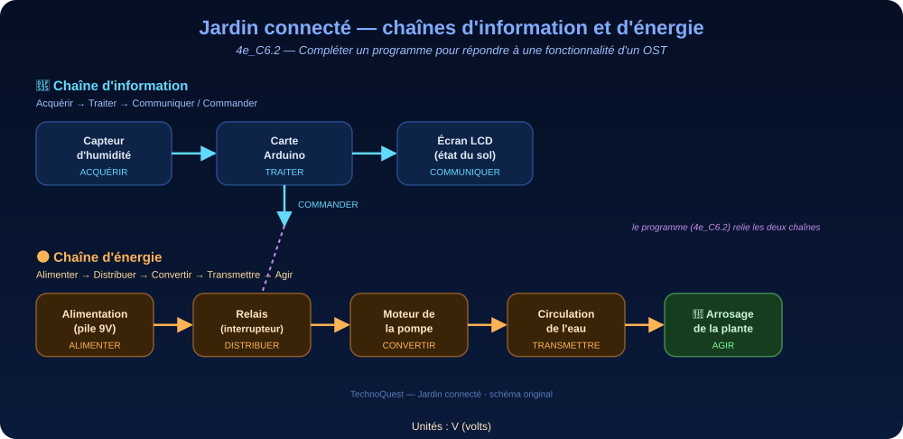
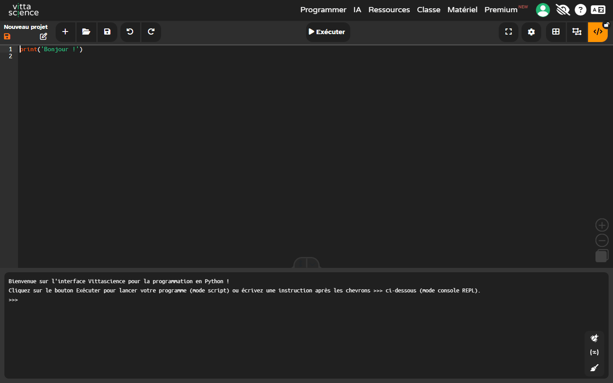
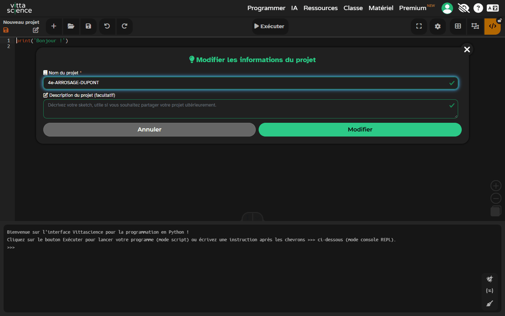
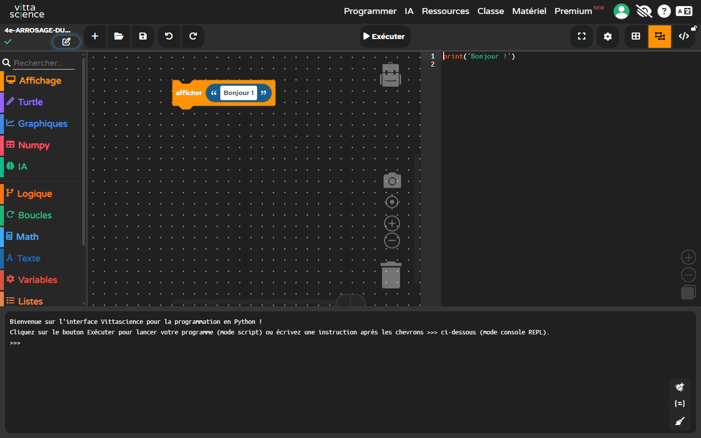
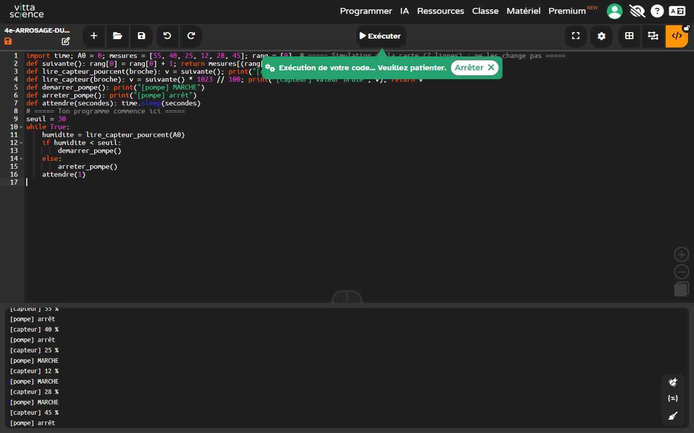
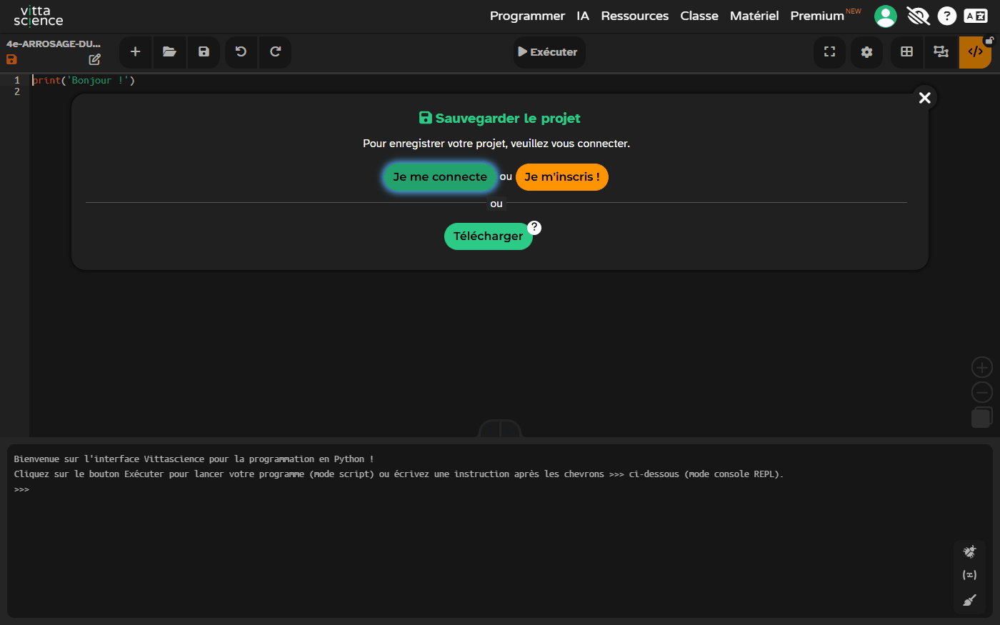
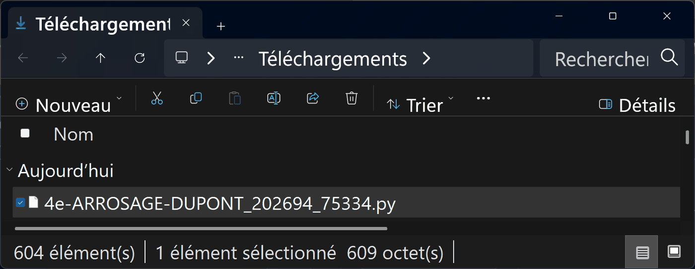
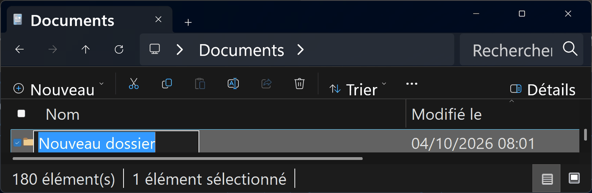
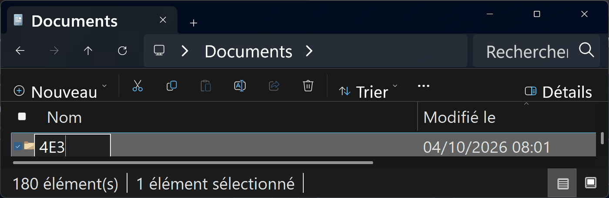
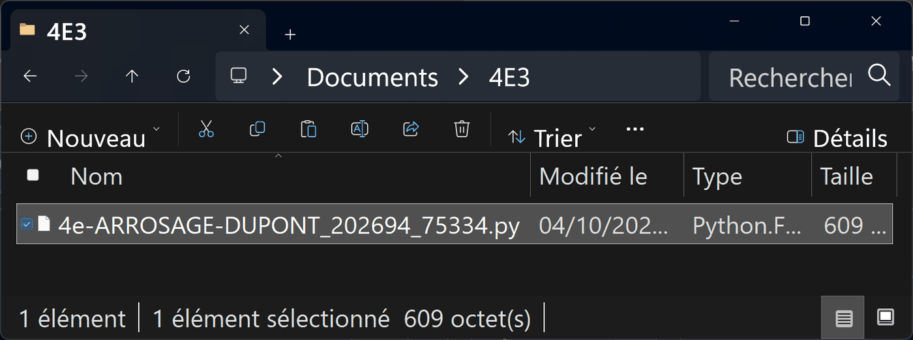

Dans cette séquence : tu vas écrire la logique d'arrosage toi-même, sous forme d'algorigramme puis de programme. Ce n'est pas un texte à comprendre : c'est une décision à formuler assez précisément pour qu'une machine l'exécute sans se tromper.
Un mot à garder en tête : un algorigramme est un dessin qui montre les décisions d'un programme — un losange pour une question, un rectangle pour une action.
4eThème 2 — Structure, fonctionnement, comportement4e_C6.2D1.3 · D2 · D4⏱ 3 séances de 55 min
📖 Situation déclenchante
Pendant les vacances, les plantes du collège ne sont pas toujours arrosées. En Martinique,
le carême peut être rude : certaines reçoivent trop d'eau, d'autres pas assez — et l'eau coûte cher. Le collège
dispose d'un prototype d'arrosage automatique… mais son programme est INCOMPLET : à toi de le compléter,
de le tester et de prouver qu'il répond au besoin.
🔁 Le contrat de la séquence
FAIRE pour comprendre : tu manipules le prototype dans la page (capteur simulé, banc de tests) — avant toute définition.
COMPRENDRE : les « À retenir » nomment les concepts : chaîne d'information, chaîne d'énergie, instruction conditionnelle, cas frontière.
REFAIRE pour comprendre encore : tu réinvestis la condition à seuil dans les défis (hystérésis, capteur absurde) — même concept, autre habit.
❓ Problématique
Comment compléter le programme du prototype pour qu'il arrose automatiquement — et uniquement quand c'est nécessaire ?
Problèmes intermédiaires (un par séance)
Comment mesurer l'humidité du sol et transmettre cette information ?
Comment décider si la plante doit être arrosée, et commander la pompe ?
Comment vérifier que le système répond au besoin, et quel est son impact ?
🎯 Mission
Ta mission : compléter le programme du prototype (les blocs à remettre en ordre, puis les
trous du Python), le tester dans l'éditeur Vittascience, et valider son comportement sur un banc de tests —
cas frontière compris.
Production attendue : un programme complété et testé, le banc de tests au vert, et un court
argumentaire justifiant le seuil choisi.
🔀 Trois façons de vivre l'atelier
🅰 Avec matériel : l'éditeur Vittascience relié à une carte réelle + capteur d'humidité + relais + petite pompe 5 V (volts) ou DEL de substitution (très basse tension uniquement — jamais de secteur).
🅱 En simulation : les barres 🧪 bleues des séances 1, 2 et du Bonus ouvrent l'éditeur Vittascience dans un nouvel onglet, en mode code (tu tapes ton programme) — un clic sur leur lien-bouton. Le simulateur de pompe de la séance 2 complète le tout. C'est le parcours principal.
🅲 Sans matériel : la remise en ordre, le Python à trous, le simulateur de pompe et le banc de tests fonctionnent entièrement dans la page, hors ligne.
📡 Méthode de l'atelier — prédire → tester → reporter : à chaque exercice, tu PRÉDIS
d'abord le résultat (sans ordinateur), tu TESTES ensuite dans l'éditeur ou le simulateur, et tu REPORTES ce que
tu observes. C'est la démarche du technicien : jamais « je crois », toujours « j'ai vérifié ».
🗺️ Chaînes fonctionnelles

La carte relie les deux chaînes : elle traite l'information reçue du capteur puis commande le relais qui alimente la pompe. 📐 Règle du schéma : l'information en haut, l'énergie en bas, l'ordre qui descend.
0 / 8 activités validées
🎫 Billet d'entrée — trois questions, sans note
Une question par ligne du bloc « Avant de commencer ». Elles ne sont pas notées et ne comptent pas dans ta progression : elles te disent quoi relire avant de te lancer. « Je ne sais pas encore » est une réponse utile.
🌐 Cette activité demande une connexion Internet — l'éditeur Vittascience est en ligne. Sans connexion : écris ton programme sur le cahier : la logique est ce qui compte, la saisie se fera à la séance suivante.
Question directrice : comment mesurer l'humidité du sol et transmettre cette information ?
Activité 1
La chaîne d'information du prototype
⏱ 10 min
Consigne : complète les 3 cases avec le bon élément.
💡 Aide niveau 1 — un indice
« Acquérir », c'est capter une grandeur du monde réel. Quel composant touche la terre du pot ?
💡 Aide niveau 2 — la démarche
Suis le schéma des chaînes fonctionnelles ci-dessus, de gauche à droite : ce qui capte → ce qui traite → ce qui affiche. Reporte chaque bloc dans la bonne case.
📖 Correction complète
capteur d'humidité → acquiert · carte programmable → traite · écran LCD → communique. La chaîne d'information : acquérir → traiter → communiquer. Le capteur ne décide RIEN : c'est le programme de la carte qui décide.
Activité 2
Le capteur parle en nombres
⏱ 15 min
Document 1 : le capteur d'humidité est analogique : il renvoie à la carte un
nombre entre 0 (sol complètement sec) et 1023 (sol saturé d'eau). Le programme le convertit en
pourcentage : humidite = valeur_brute × 100 / 1023.
Consigne : PRÉDIS les conversions, puis vérifie-les à la calculatrice (ou dans l'éditeur de l'activité 3).
💡 Aide niveau 1 — un indice
1023 × 100 / 1023 : simplifie avant de calculer. Et 512, c'est à peu près la moitié de 1023…
💡 Aide niveau 2 — la démarche
La formule est une proportionnalité : (valeur ÷ 1023) × 100. Pour la dernière question : le capteur ne sait QUE mesurer — tout calcul est fait par le programme (4e_C4.5 : transformation des données).
📖 Correction complète
1023 → 100 % · 0 → 0 % · 512 → ≈ 50 % · conversion faite par le programme de la carte. C'est la transformation d'une donnée brute (0-1023) en information utile (un pourcentage) — exactement le rôle du TRAITEMENT dans la chaîne d'information.
🧰 Avant de commencer (échauffement) — les quatre gestes de Vittascience
Quatre gestes à faire une fois, au début, et ta séance ne
se perdra pas. Tu les as peut-être déjà faits une autre année : refais-les,
c'est court. Et si tu ne les as jamais faits, tout est écrit ici — tu n'as
besoin de rien d'autre.
Ouvrir. Clique sur le bouton ▶ Ouvrir l'éditeur Vittascience dans un nouvel onglet de l'activité : l'éditeur Python s'ouvre dans un nouvel onglet, en mode code : tu écris ton programme au clavier. Une ligne print('Bonjour !') est déjà là : efface-la avant de commencer.
Ce que tu dois voir : le bouton ▶ Ouvrir l'éditeur Vittascience…, dans le cadre de l'activité, sous le préambule et son bouton Copier. Puis : clique-le ; garde cet onglet-ci ouvert pour lire la consigne.

Comment savoir que c'est fait : une seule grande zone de texte, la console en bas, et le nom « Nouveau projet » en haut à gauche. Puis : efface la ligne print('Bonjour !'), que Vittascience met dans tout projet neuf, et tape ton programme à la place.
Nommer. Clique le crayon à côté du nom du projet, en haut à gauche, et remplace « Nouveau projet » par 4e-ARROSAGE-TON NOM. Un projet sans nom est introuvable la semaine suivante.

Ce que tu dois voir : la fenêtre « Modifier les informations du projet », avec ton nom dans « Nom du projet ». Puis : clique Modifier. DUPONT est un exemple : mets ton nom.

Comment savoir que c'est fait : ton nom apparaît en haut à gauche. Il est coupé à l'écran mais il est entier : c'est lui qui nommera ton fichier au geste 4.
Retrouver. La semaine suivante, ne rouvre pas ton fichier par Ouvrir → Depuis votre appareil : Vittascience remettrait print('Bonjour !') à la place de ton programme. Ouvre ton fichier .py (celui du geste 4) dans le Bloc-notes : dans Documents, dans le dossier de ta classe, clic droit sur le fichier, puis Modifier dans Bloc-notes. Sélectionne à partir de la ligne import time (le préambule fait partie de ton programme), sans l'en-tête, puis Ctrl + C. Dans Vittascience, clique dans la zone de texte, Ctrl + A, puis Ctrl + V : ton programme remplace print('Bonjour !').
Ce que tu dois voir : le menu du clic droit, avec la ligne Modifier dans Bloc-notes. Clique-la.Si cette ligne n'est pas dans le menu : clique Ouvrir avec, cherche Bloc-notes dans la liste, puis Une seule fois. Les autres lignes dépendent du poste : ce sont celles de ce poste-ci.Ce que tu dois voir : le Bloc-notes, le nom de ton fichier dans l'onglet, l'en-tête de Vittascience, puis ton programme. Sélectionne à partir de la ligne import time (le préambule fait partie de ton programme), sans l'en-tête, jusqu'à la fin. Puis Ctrl + C. La fenêtre est recadrée sur sa partie gauche ; le programme est un exemple.

Comment savoir que c'est fait : ton programme, préambule compris, a pris la place de print('Bonjour !'), et Exécuter remplit la console. Pour arrêter : clique Arrêter, dans le bandeau vert. En cas d'erreur, le numéro de ligne donné par la console est celui de la marge. Le programme est un exemple : c'est le tien qui revient.
Sortir. Vittascience ne garde pas ton travail d'une séance à l'autre. Clique la disquette, puis Télécharger : un fichier .py au nom de ton projet arrive dans Téléchargements. Vittascience ajoute des chiffres à la fin du nom du fichier : c'est normal. Déplace-le dans Documents, dans le dossier de ta classe (exemple : 4E3). Si ce dossier n'existe pas encore, crée-le d'abord : dans Documents, Nouveau → Dossier, tape le nom de ta classe, puis valide.

Ce que tu dois voir : la fenêtre « Sauvegarder le projet », ouverte par la disquette. Ne te connecte pas et ne t'inscris pas : clique Télécharger, le bouton vert tout en bas.

Ce que tu dois voir : le fichier .py au nom de ton projet, dans Téléchargements — le navigateur l'y range sans rien demander. Clique-le une fois, puis Ctrl + X pour le couper. Les chiffres à la fin du nom sont ajoutés par Vittascience ; DUPONT est un exemple. La fenêtre est rétrécie pour ne montrer que ce fichier.

Si le dossier de ta classe n'existe pas encore : dans Documents, clique Nouveau puis Dossier. Un dossier apparaît, son nom surligné : tu peux taper le tien. La fenêtre est rétrécie : tes autres dossiers ne sont pas montrés.

Ce que tu dois voir : le nom de ta classe à la place de « Nouveau dossier ». Puis : Entrée, double-clic sur le dossier pour y entrer, et Ctrl + V pour y coller ton fichier. 4E3 est un exemple : c'est le nom de ta classe.

Comment savoir que c'est fait : en haut, Documents › 4E3 ; dans la liste, ton fichier .py. Il n'est plus dans Téléchargements : il est rangé.
Activité 3
Les blocs en désordre — remets le programme de MESURE en ordre
⏱ 25 min
Consigne : le stagiaire a fait tomber les blocs du programme de mesure… Attribue à
chaque ligne sa position (1 à 5), puis reconstruis et exécute le programme dans l'éditeur 🧪 pour vérifier.
humidite=valeur_brute*100/1023
attendre(1)
whileTrue:# répéter sans fin
print("Humidité du sol :", humidite, "%")
valeur_brute=lire_capteur(A0)
🎨 Lis le code en couleurs : variables · "textes" · nombres · mots-clés · = et opérateurs
🧪 Reconstruis le programme de mesure dans l'onglet Vittascience — en Python
L'éditeur s'ouvre dans un nouvel onglet, en mode code : tu tapes ton programme dans la grande zone de texte, la console est en bas. (Connexion Internet nécessaire pour l'éditeur ; le reste de la page fonctionne hors ligne.)
Sans carte réelle, commence par coller le préambule ci-dessous (bouton Copier) : dans l'éditeur, clique dans la zone de texte, Ctrl + A, puis Ctrl + V. Il fabrique les fonctions de la carte, qui affichent ce que la carte ferait.
import time; A0 = 0; mesures = [55, 40, 25, 12, 28, 45]; rang = [0] # ===== Simulation de la carte (7 lignes) : ne les change pas =====
def suivante(): rang[0] = rang[0] + 1; return mesures[(rang[0] - 1) % len(mesures)]
def lire_capteur_pourcent(broche): v = suivante(); print("[capteur]", v, "%"); return v
def lire_capteur(broche): v = suivante() * 1023 // 100; print("[capteur] valeur brute", v); return v
def demarrer_pompe(): print("[pompe] MARCHE")
def arreter_pompe(): print("[pompe] arrêt")
def attendre(secondes): time.sleep(secondes)
# ===== Ton programme commence ici =====
Tape ensuite tes cinq lignes sous le préambule, dans l'ordre que tu as choisi, clique Exécuter et observe la console. Le programme boucle sans fin : clique Arrêter, dans le bandeau vert, pour l'arrêter. En cas d'erreur, le numéro de ligne donné par la console est celui de la marge de l'éditeur.
Vittascience n'accepte pas d'être affiché à l'intérieur d'une autre page : l'éditeur s'ouvre dans un onglet à part. Garde cet onglet-ci ouvert pour lire la consigne.
💡 Aide niveau 1 — un indice
On ne peut pas convertir une valeur qu'on n'a pas encore lue. Et « répéter sans fin » englobe tout ce qui doit se refaire chaque seconde.
💡 Aide niveau 2 — la démarche
Ordre logique du technicien : ① ouvrir la répétition (while True:) → ② LIRE le capteur → ③ CONVERTIR la valeur → ④ AFFICHER le résultat → ⑤ ATTENDRE avant la mesure suivante. Vérifie ta prédiction dans l'éditeur avant de valider.
while True:
valeur_brute = lire_capteur(A0)
humidite = valeur_brute * 100 / 1023
print("Humidité du sol :", humidite, "%")
attendre(1)
Lire AVANT de convertir, convertir AVANT d'afficher : chaque ligne utilise ce que la précédente a rangé dans sa boîte.
🧠 À retenir (séance 1) : un capteur analogique fournit un NOMBRE brut ; c'est le
PROGRAMME qui le transforme en information utile, dans un ordre qui ne doit rien au hasard : lire → convertir →
afficher → attendre, le tout répété sans fin.
🌐 Cette activité demande une connexion Internet — l'éditeur Vittascience est en ligne. Sans connexion : écris ton programme sur le cahier : la logique est ce qui compte, la saisie se fera à la séance suivante.
Question directrice : comment décider si la plante doit être arrosée, et commander la pompe ?
Activité 4
La décision — en français d'abord
⏱ 10 min
Consigne : complète la règle de décision en langage naturel — le pseudo-code s'écrit sous tes yeux.
SIhumidite…seuilALORS pompe… SINON pompe=ARRET FIN SI
💡 Aide niveau 1 — un indice
Un sol SEC, c'est une humidité BASSE. Basse par rapport à quoi ?
💡 Aide niveau 2 — la démarche
Déroule la frontière À LA MAIN : humidite = 30, seuil = 30 → « 30 < 30 » est FAUX → on passe dans le SINON. Le cas limite se décide toujours en revenant au BESOIN.
📖 Correction complète
humidité inférieure au seuil → sol sec → on active la pompe. À la frontière (30 pile), « 30 < 30 » est FAUX → pompe à l'arrêt : le sol est juste assez humide, on économise l'eau. Un programme ne « sent » rien : il compare des nombres.
Activité 5
Le Python à trous — complète le programme du prototype
⏱ 25 min
Consigne : voici le programme FOURNI du prototype, avec trois trous. PRÉDIS chaque trou,
puis recopie et exécute le programme complété dans l'éditeur 🧪 — c'est la capacité attendue de 4e_C6.2 !
🧪 Recopie ton programme complété dans l'onglet Vittascience et exécute-le — la preuve par la console
Mode code. Colle d'abord le préambule (bouton Copier, comme à l'activité 3) : lire_capteur_pourcent, demarrer_pompe, arreter_pompe et attendre existent alors, et elles affichent ce que la carte ferait.
import time; A0 = 0; mesures = [55, 40, 25, 12, 28, 45]; rang = [0] # ===== Simulation de la carte (7 lignes) : ne les change pas =====
def suivante(): rang[0] = rang[0] + 1; return mesures[(rang[0] - 1) % len(mesures)]
def lire_capteur_pourcent(broche): v = suivante(); print("[capteur]", v, "%"); return v
def lire_capteur(broche): v = suivante() * 1023 // 100; print("[capteur] valeur brute", v); return v
def demarrer_pompe(): print("[pompe] MARCHE")
def arreter_pompe(): print("[pompe] arrêt")
def attendre(secondes): time.sleep(secondes)
# ===== Ton programme commence ici =====
Recopie ensuite ton programme complété sous le préambule et clique Exécuter. Le capteur simulé lit 55, 40, 25, 12, 28, puis 45 %, et recommence : la console montre la décision pour chaque mesure. Le programme boucle sans fin : clique Arrêter, dans le bandeau vert.
Vittascience n'accepte pas d'être affiché à l'intérieur d'une autre page : l'éditeur s'ouvre dans un onglet à part. Garde cet onglet-ci ouvert pour lire la consigne.
💡 Aide niveau 1 — un indice
Reprends ta règle de l'activité 4 : elle se traduit mot à mot. « inférieure » → quel symbole ?
💡 Aide niveau 2 — la démarche
Trou par trou : ① la condition du SI est la traduction directe de « humidité inférieure au seuil » ; ② DANS le SI (sol sec), on démarre ; ③ dans le SINON (sol assez humide), on arrête. Puis exécute : pour une mesure de 12 %, quelle branche s'affiche ?
📖 Correction complète
seuil = 30
while True:
humidite = lire_capteur_pourcent(A0)
if humidite < seuil:
demarrer_pompe()
else:
arreter_pompe()
attendre(1)
Avec humidite = 12 : « 12 < 30 » est VRAI → la pompe démarre. Remarque de technicien : le nombre 30
n'est écrit qu'à UN endroit (la variable seuil) — pour changer le réglage, une seule ligne à modifier.
Activité 6
Le banc de tests — règle ton seuil et PROUVE le comportement
⏱ 20 min
Consigne : joue d'abord avec le simulateur (curseurs), puis exécute les 3 tests du banc :
pour chacun, PRÉDIS l'état de la pompe avant de cliquer ▶.
🪴
Pompe à l'arrêt
Test
humidité
seuil
Attendu (le besoin)
Obtenu
T1 — sol sec
10
30
POMPE EN MARCHE
—
T2 — sol humide
80
30
pompe à l'arrêt
—
T3 — FRONTIÈRE
30
30
pompe à l'arrêt
—
💡 Aide niveau 1 — un indice
Si le programmeur avait écrit <= au lieu de <, T1 et T2 passeraient quand même… et T3 ?
💡 Aide niveau 2 — la démarche
Un banc de tests couvre chaque cas du besoin + chaque FRONTIÈRE. « Ça a marché une fois » n'est pas une preuve : trois tests verts, frontière comprise, en sont une. (Souviens-toi du lampadaire : même démarche.)
📖 Correction complète
T1 : 10 < 30 VRAI → MARCHE ✔ · T2 : 80 < 30 FAUX → arrêt ✔ · T3 : 30 < 30 FAUX → arrêt ✔. La frontière est LE piège classique : avec <=, la pompe arroserait un sol déjà assez humide — gaspillage. Le symbole se choisit avec le BESOIN, pas au hasard.
🧠 À retenir (séance 2) : une instruction conditionnelle lit une variable et DÉCIDE ;
la frontière (égalité pile) se déroule à la main pour choisir entre < et <= ;
et un comportement se PROUVE par un banc de tests — jamais par « ça a l'air de marcher ».
Question directrice : le système répond-il au besoin, et quel est son impact ?
Activité 7
Le verdict — cahier des charges ligne par ligne
⏱ 20 min
Consigne : pour chaque exigence du cahier des charges, rends ton verdict — et appuie-toi sur une PREUVE (une activité, un test).
Fonction / contrainte
Critère
Ton verdict
Détecter un sol sec
Valeur d'humidité mesurée et convertie
Arroser uniquement si nécessaire
Déclenchement sous le seuil seulement
Économiser l'eau
Pas d'arrosage à la frontière ni au-dessus
Fonctionner en sécurité
Alimentation du prototype
💡 Aide niveau 1 — un indice
Un verdict sans preuve ne vaut rien : associe chaque ligne à l'activité qui l'a démontrée.
💡 Aide niveau 2 — la démarche
C'est la démarche de VALIDATION : besoin → critère → test → verdict. La sécurité électrique n'est pas négociable : un prototype de collège fonctionne en très basse tension, toujours.
📖 Correction complète
Les 4 exigences sont respectées, et chacune a sa preuve : mesure (act. 3), banc complet (act. 6), frontière T3 (act. 6), très basse tension (🅰). Valider, c'est relier chaque ligne du cahier des charges à un test qui la prouve.
Activité 8
L'impact — moins d'eau, vraiment ?
⏱ 15 min
Consigne : compare ce système à un arrosage « tous les jours à 7 h » — puis note tes 2 arguments pour le débat de classe.
💡 Aide niveau 1 — un indice
Que se passe-t-il un jour de pluie avec l'arrosage à heure fixe ? Et avec le nôtre ?
💡 Aide niveau 2 — la démarche
Pense aussi aux LIMITES (usage raisonné 4e_C1.4) : un capteur peut dériver ou s'encrasser, le seuil dépend de la plante, et fabriquer le système a aussi un coût. Un bon argument reconnaît les limites.
📖 Correction complète
Il n'arrose QUE si le sol est sec — un jour de pluie, l'arrosage à heure fixe gaspille, le nôtre s'abstient (T2 !). Arguments possibles : économie d'eau en carême, plante mieux portante (ni trop ni trop peu), MAIS entretien du capteur et choix du seuil restent à la charge de l'humain : automatique ne veut pas dire sans surveillance.
Auto-éval
Où en es-tu ?
⏱ 5 min
📡 Je sais remettre en ordre un programme de mesure (lire → convertir → afficher)
🚰 Je sais compléter une condition (symbole + actions) et la tester dans l'éditeur
🧪 Je sais prouver un comportement par un banc de tests, frontière comprise
📝 Synthèse — à retenir
Afficher la trace écrite
Un système automatisé enchaîne deux circuits complémentaires : la chaîne d'information (un capteur
ACQUIERT une donnée brute, le programme la TRAITE — conversion, comparaison au seuil —, un écran COMMUNIQUE)
et la chaîne d'énergie (l'alimentation fournit, le relais distribue, la pompe convertit en action).
Compléter un programme (4e_C6.2), c'est ajouter ou ajuster une instruction conditionnelle
(SI … ALORS … SINON) sans tout réécrire — puis prouver le comportement par un banc de tests dont le cas
frontière. Le choix du seuil est un compromis technique : trop bas, la plante a soif ; trop haut, on gaspille.
🔁 Le concept invariant : ce que tu as refait dans les défis (hystérésis, garde-fou du capteur), tu l'avais déjà fait en complétant l'arrosage — le concept commun s'appelle la comparaison à un seuil : elle se dessine (algorigramme, chaînes d'information et d'énergie), se code en blocs et se lit en Python.
✅ Évaluation
Grille de maîtrise (LSU) appliquée à la compétence 4e_C6.2 — évaluée en séance 3, sur la capacité observable (compléter, exécuter, prouver) :
1 — Insuffisante La condition n'est pas complétée, même avec de l'aide
2 — Fragile La condition est complétée avec les deux aides
3 — Satisfaisante La condition est complétée et exécutée dans l'éditeur seul(e)
4 — Très bonne …et le banc de tests est vert, frontière justifiée
🧩 Différenciation
Aides intégrées : chaque activité embarque deux niveaux d'aide (un indice, puis la démarche) — à ouvrir AVANT de regarder la correction.
Élèves rapides : le bloc 🎁 Bonus les attend (deuxième condition, seuil réglable). Approfondissement 3e : la version multi-conditions t'attend dans l'atelier « Variables, types et systèmes » (3e_C9.1) — mêmes boîtes, mêmes bancs de tests.
🎁 Bonus (facultatif — hors parcours obligatoire)
🌐 Cette activité demande une connexion Internet — l'éditeur Vittascience est en ligne. Sans connexion : écris ton programme sur le cahier : la logique est ce qui compte, la saisie se fera à la séance suivante.
Trois défis ouverts, sans vérificateur :
🌙 Défi nuit : on ne veut PAS arroser la nuit (l'eau s'évapore moins, la pompe réveille le gardien).
Ajoute une deuxième condition avec luminosite : la pompe ne démarre que si le sol est sec ET s'il fait jour.
🎚 Défi réglage : remplace le seuil fixe par une valeur réglable (un potentiomètre en 🅰, une variable
modifiée en tête de programme en 🅱) — combien de lignes as-tu dû changer ? Pourquoi si peu ?
🏡 Défi maison : explique à quelqu'un de ta famille pourquoi le test « 30 pile » est le plus important
du banc. S'il trouve la réponse tout seul à « et avec ≤ ? », vous avez gagné tous les deux.
🧪 L'éditeur du Bonus — code tes défis ici, dans l'onglet Vittascience
L'éditeur s'ouvre en mode code, console en bas. (Connexion Internet nécessaire pour l'éditeur ; le reste de la page fonctionne hors ligne.)
Colle d'abord le préambule (bouton Copier), puis écris tes défis sous ses huit lignes. Un programme qui boucle sans fin s'arrête avec Arrêter, dans le bandeau vert.
import time; A0 = 0; mesures = [55, 40, 25, 12, 28, 45]; rang = [0] # ===== Simulation de la carte (7 lignes) : ne les change pas =====
def suivante(): rang[0] = rang[0] + 1; return mesures[(rang[0] - 1) % len(mesures)]
def lire_capteur_pourcent(broche): v = suivante(); print("[capteur]", v, "%"); return v
def lire_capteur(broche): v = suivante() * 1023 // 100; print("[capteur] valeur brute", v); return v
def demarrer_pompe(): print("[pompe] MARCHE")
def arreter_pompe(): print("[pompe] arrêt")
def attendre(secondes): time.sleep(secondes)
# ===== Ton programme commence ici =====
Vittascience n'accepte pas d'être affiché à l'intérieur d'une autre page : l'éditeur s'ouvre dans un onglet à part. Garde cet onglet-ci ouvert pour lire la consigne.
🧠 Prêt·e à t'entraîner ?
30 questions — chaque mauvaise réponse est réfutée une par une — pour vérifier la chaîne
d'information, la conversion de la mesure, la condition et la preuve par le banc de tests.
Verrous expérientiels : act. 3 exige l'ouverture de l'éditeur 🧪, act. 5 aussi, act. 6 exige
les 3 tests du banc exécutés. Les réponses et badges des élèves restent dans la page (sauvegarde locale du poste).
Progressivité 2024 : 4e_C6.2 travaillée ici prépare 4e_C6.3 (tester/valider une modification)
et l'atelier 3e_C9.1 (fonctions, types, multi-conditions). En amont : le SI/SINON du lampadaire de 5e.
Matériel (version 🅰) : carte + capteur d'humidité + relais + pompe 5 V (volts) ou DEL — très basse
tension uniquement, jamais de secteur.
![La page de la séquence, en thème sombre, sur l'activité 3. Dans le cadre « Reconstruis le programme de mesure dans l'onglet Vittascience — en Python », le préambule de simulation en huit lignes de code, un bouton « Copier le préambule », puis un bouton bleu « ▶ Ouvrir l'éditeur Vittascience dans un nouvel onglet », suivi de la phrase « Vittascience n'accepte pas d'être affiché à l'intérieur d'une autre page : l'éditeur s'ouvre dans un onglet à part. Garde cet onglet-ci ouvert pour lire la consigne. »](Images/geste_vitta_1_ouvrir_bouton.png)

![Le fichier .py ouvert dans le Bloc-notes de Windows, en thème sombre. Dans l'onglet, le début du nom du fichier : « 4e-ARROSAGE-DU… ». Sous la barre de menus (Fichier, Modifier, Affichage), quatorze lignes d'en-tête de Vittascience entre deux lignes de trois guillemets, dont une longue ligne Blocks coupée à droite. En dessous, sur fond bleu, seize lignes sélectionnées : les huit lignes du préambule, de « import time; A0 = 0; … » à « # ===== Ton programme commence ici ===== », puis le programme, de « seuil = 30 » à « attendre(1) ». L'image est recadrée sur la partie gauche de la fenêtre.](Images/geste_vitta_3b_retrouver_bloc_notes.png)